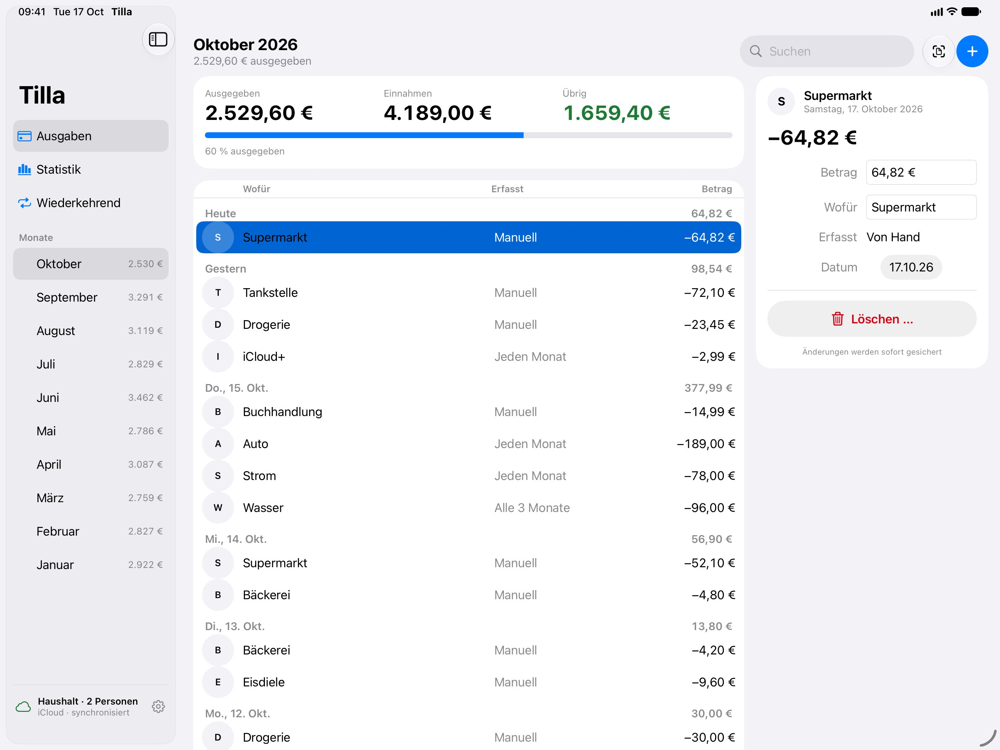
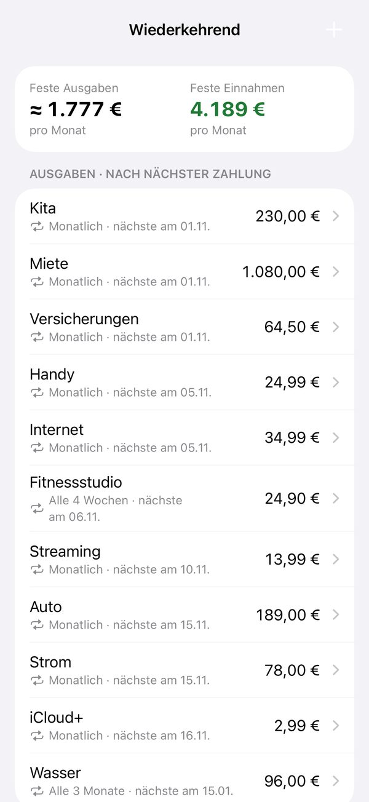
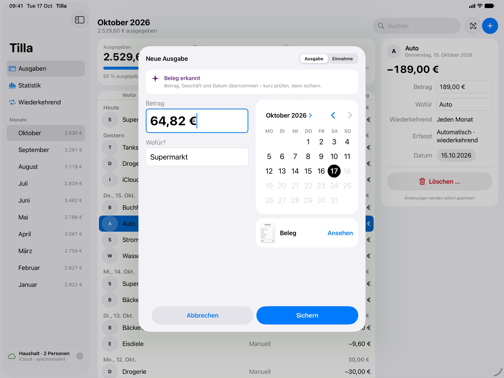
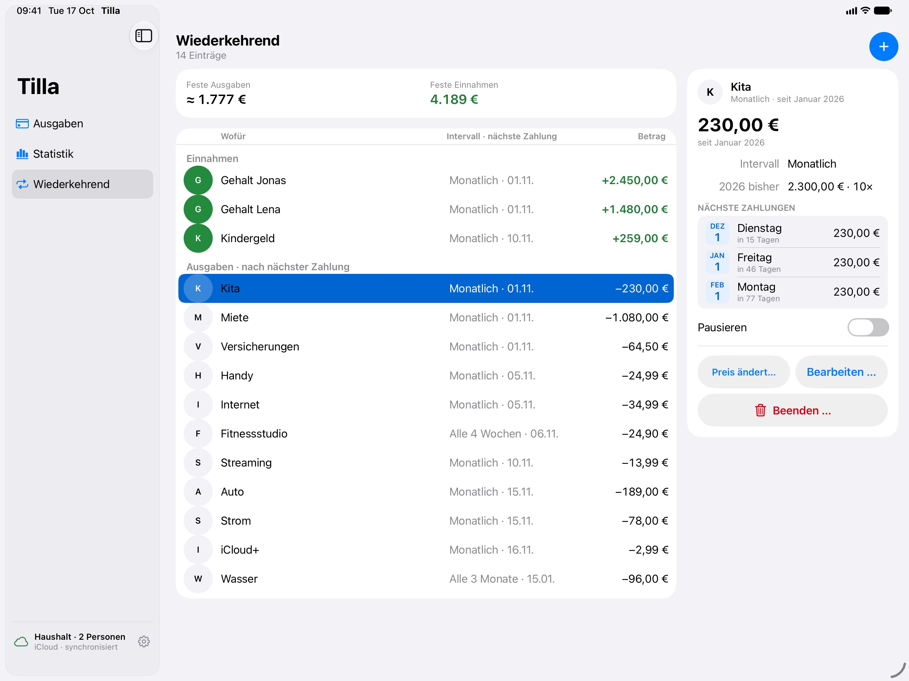
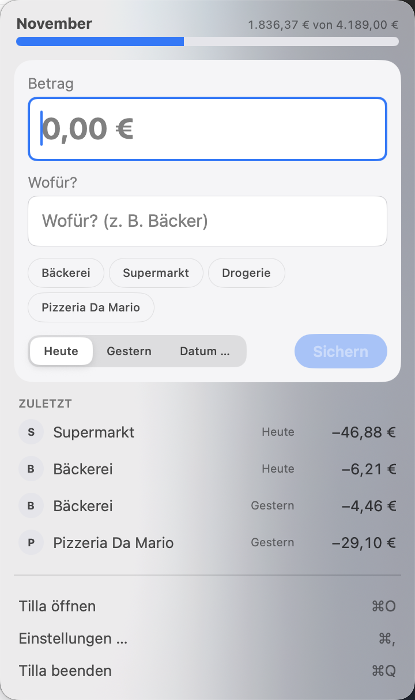
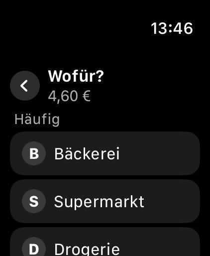
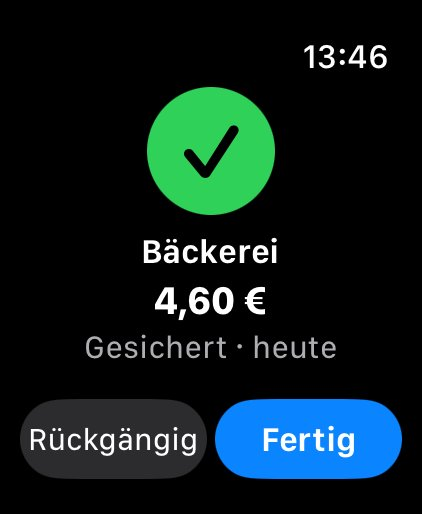
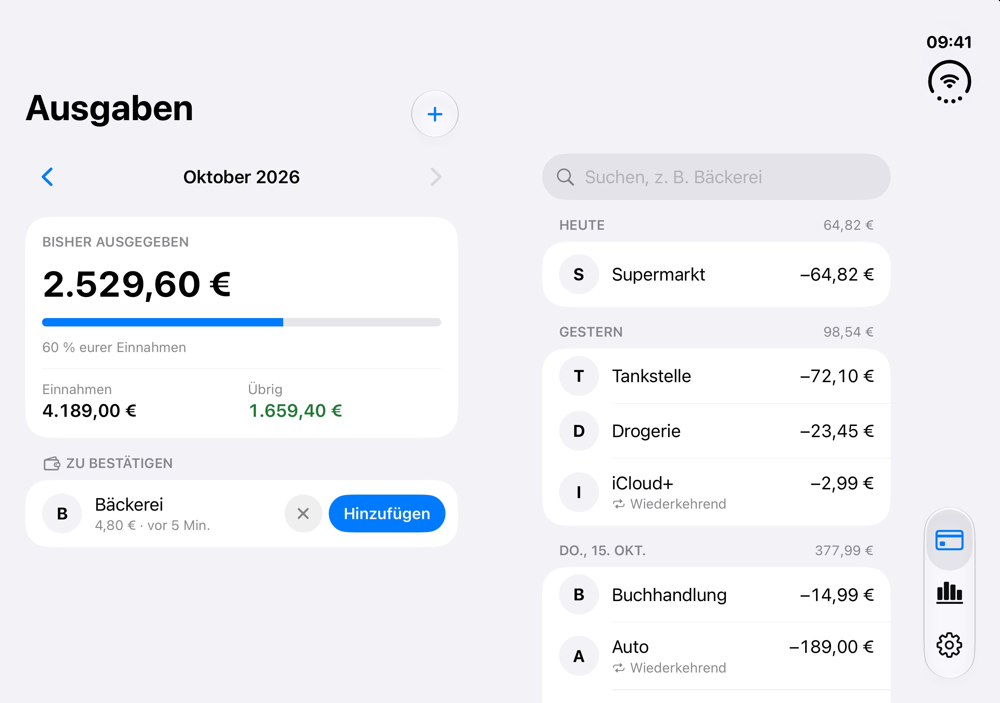
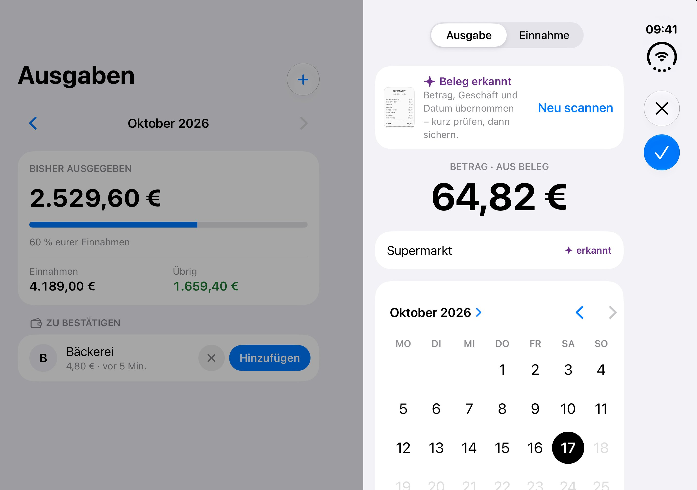
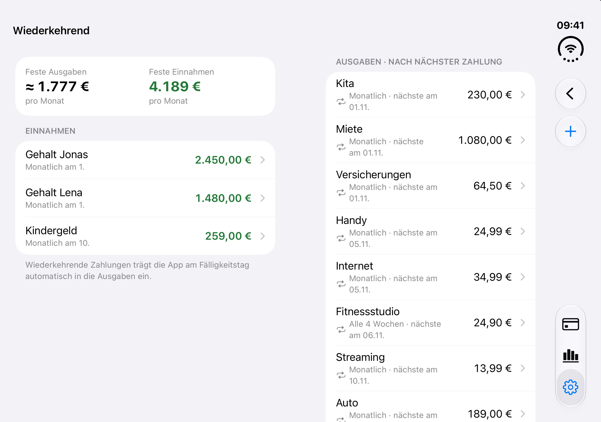

Gemeinsame Ausgaben im Blick
Das gemeinsame Haushaltsbuch für Paare, Familien und WGs: Ihr tragt ein, was ihr ausgebt, und seht jederzeit, wie viel von euren Einnahmen diesen Monat noch übrig ist – ohne Kategorien, Budgets oder Tabellen.




Eure Daten liegen nur auf euren Geräten und in eurem iCloud.
- Kein Server
- Kein Tracking
- Keine Werbung
- Kein neues Konto
So funktioniert Tilla

Gemeinsam über iCloud
Ladet alle, mit denen ihr zusammenwohnt, per Nachricht ein – alle sehen sofort dasselbe. Kein neues Konto, kein Passwort: Tilla nutzt eure Apple-ID.

In Sekunden eingetragen
Betrag tippen oder den Kassenbon scannen – Tilla erkennt Summe, Geschäft und Datum. Nach jeder Zahlung mit Apple Pay schlägt Tilla die Ausgabe vor. Zum Kurzbefehl →

Feste Ausgaben tragen sich selbst ein
Miete, Kita oder Strom legt ihr einmal an, Tilla trägt sie am Fälligkeitstag ein. Ändert sich ein Betrag, gilt er ab dem Monat, den ihr wählt.

Seht, wohin euer Geld geht
Monat und Jahr: Einnahmen, Ausgaben, was übrig bleibt und wo ihr am meisten ausgebt. „Ohne Fixkosten“ zeigt, was im Alltag zusammenkommt.
Auf allen euren Geräten
Was ihr auf einem Gerät eintragt, ist über iCloud gleich auf allen anderen – bei allen im Haushalt.
Immer dabei
Eintragen, wo das Geld ausgegeben wird.
- Betrag tippen oder Kassenbon scannen
- Nach Apple Pay schlägt Tilla die Ausgabe vor
- Mit Siri eintragen, ohne die App zu öffnen

Auf dem Sofa
Der ganze Monat auf einem Bildschirm.
- Alle Monate in der Seitenleiste
- Der gewählte Eintrag gleich neben der Tabelle
- Statistik mit dem Geschäft daneben



Am Schreibtisch
Mit Tastatur, Maus und Menüleiste.
- ⌥⌘N: eintragen aus jeder App
- Belege einfach aufs Fenster ziehen
- Eure Einträge als Tabelle


An der Kasse
Eingetragen, bevor das Wechselgeld da ist.
- Betrag tippen
- Geschäft wählen oder diktieren
- Der Ring zeigt, wie viel eurer Einnahmen schon ausgegeben ist



Aufgeklappt
Zwei Hälften, zwei Ansichten.
- Links der Monat, rechts eure Einträge
- Neue Ausgaben öffnen sich neben dem Knick
- Beim Einrichten die Schritte immer im Blick




AußerdemSiri und KurzbefehleTägliche ErinnerungHell- und DunkelmodusFünf Sprachen
Häufige Fragen
Kostet Tilla etwas?
Nein. Tilla ist kostenlos – ohne Abo, ohne In-App-Käufe und ohne Werbung.
Brauchen alle im Haushalt ein iPhone?
Jede Person braucht ein Gerät von Apple mit iCloud – iPhone, iPad oder Mac. Eingeladen wird per Nachricht, ein neues Konto braucht niemand.
Wo liegen unsere Daten?
Nur auf euren Geräten und in eurem iCloud. Es gibt keinen Tilla-Server, auch der Entwickler sieht nichts davon.
Was passiert, wenn jemand den Haushalt verlässt?
Wer geht, entscheidet, ob die eigenen Einträge im Haushalt bleiben, und kann eine Kopie für sich behalten.
Kostenlos im App Store
Tilla braucht iOS 18, iPadOS 18, watchOS 10 oder macOS 15 oder neuer und ein iCloud-Konto.

Neues vorab ausprobieren? Der Beta über TestFlight beitreten →
Fragen oder Feedback? Zum Support